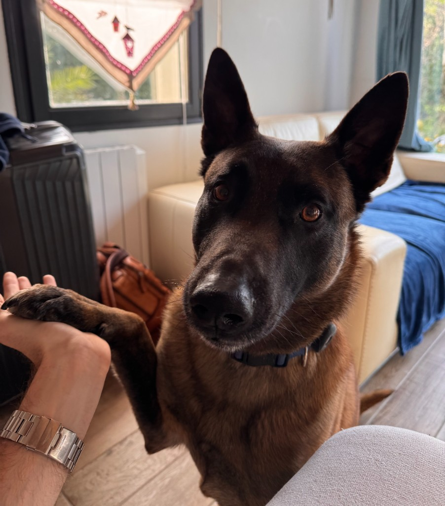

Connection & Training
Boortmeerbeek
Happiness is homemade. Wij hebben als mens enorm veel invloed op het welzijn en het gedrag van onze hond. Alfa Dogs begeleidt je in theorie en praktijk op je traject naar bewuste keuzes en eerlijke resultaten — aangenaam samenleven.
Het verhaal
Hallo daar...
Ik ben JAX, een Mechelse Herder geboren in november 2020. Ik werd op mijn 8 weken geadopteerd uit het asiel en ga sindsdien elke dag mee werken met mijn 'geleider' Jill. Ze noemt zichzelf zo omdat ze vindt dat het haar taak is om mij te begeleiden.
Vaak is dat natuurlijk zo, al vind ik het zelf niet erg dat ik nogal onstuimig en grenzeloos ben. Jill is heel dankbaar dat mijn voorgangers en ik haar begeleid hebben in ons gezamenlijke traject en om haar zo gepassioneerd door honden te hebben gemaakt.
Kortom, wij hebben ervoor gezorgd dat 'Alfa Dogs' ontstond, you're welcome!
Wie is Jill?
Filosofie
Laat je inspireren
Wij hebben als mens enorm veel invloed op het welzijn en het (probleem)gedrag van onze hond(en). Begeleiden we ze altijd op de juiste manier of kunnen we beter keuzes maken? Vinden we zelf meer rust wanneer onze hond 'gelukkig' is?
Ondanks een overvloed aan informatie is het niet altijd gemakkelijk om de juiste individuele aanpak te vinden. In de wereld van je hond is alles met elkaar verbonden, ook details zijn vaak belangrijk.
Wil je je hond een beter leven geven, samen zoeken naar oplossingen, en de leuke aspecten van je hond meer integreren in je dagelijkse leven? Dan zit je hier goed.
Ons aanbod'Rescued' does not mean 'damaged', it means they have been let down by humans...#Adopt, don't shop
Waarom Alfa Dogs
Onze sterke punten
Praktijkervaring
Hoge dosis praktijkervaring en heel open minded.
Diepgaande kennis
Veel kennis, waardoor we alternatieve mogelijkheden of oplossingen aanbieden.
Netwerk
Groot back-up netwerk met inspirerende personen.
Uitdagende gevallen
Een zwakte voor 'uitdagende' gevallen.